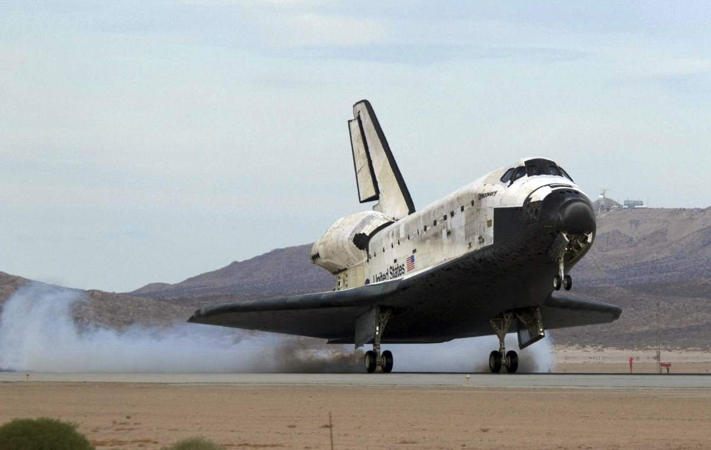

Hej, Mitt namn är Adam. Den här hemsidan har jag gjort då jag har ett väldigt stort intresse för rymden. Det finns så många olika fashinerande saker om rymden och det skulle vara omöjligt att nämna de alla. Därför kommer den här hemsidan fokusera på väldigt grundläggande saker. Huvuddelen av informationen kommer ligga under planeter där jag har samlat information om tre av mina "favorit planeter" Mars, Venus och Saturnus.
Space Shuttle, eller officiellt Space Transportation System, på svenska ofta kallad rymdfärjan, rymdskytteln eller skytteln, trots att det är ord som beskriver typen av farkost snarare än just denna specifika modell, var en bemannad rymdfarkost av typen rymdfärja, som användes av USA:s rymdstyrelse NASA mellan åren 1981 och 2011. Den första rymdfärjan, Columbia, sändes upp 1981. Totalt har fem exemplar av Space Shuttle tagits i bruk, varav två förolyckats (Columbia och Challenger) och tre tagits ur drift (Discovery, Endeavour och Atlantis). Systemet togs som planerat ur drift 2011. Den sista flygningen var med Atlantis som lyfte fredagen den 8 juli 2011.
